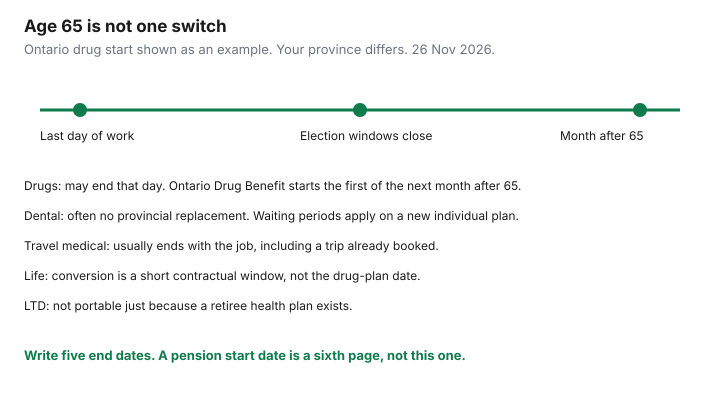

Insurance · Canada
Retire in Canada at 60: How to Bridge Health Benefits to 65

If you retire in Canada at 60, your workplace drug, dental and travel medical cover usually ends with the job, but provincial seniors’ drug programs such as Ontario Drug Benefit start only after 65. To bridge those years, list what stops on your last day, compare a retiree group plan with an individual policy, and time the provincial plan you will actually get.
The pension date and the health-plan date are different dates. Canada Pension Plan (CPP) can start at 60, but it does not enrol you in any drug plan, and Old Age Security (OAS) cannot start before 65. This page walks through the inventory, the retiree-versus-individual choice, provincial start dates, travel medical, the cost stack, and how CPP and OAS timing fit beside it. It is education for households leaving work before a seniors’ program. It is not a retirement-income plan and not tax advice.
Key takeaways
- List drugs, dental, travel medical, life, and long-term disability separately. They do not end on one sentence in the retiree brochure.
- A retiree group extension can waive waiting periods an individual plan would impose. It can also be expensive, narrow, or available only if you elect it within days of leaving.
- Ontario Drug Benefit for most seniors starts the first day of the month after the 65th birthday, with a $100 deductible and a co-payment up to $6.11 unless you qualify for the Seniors Co-Payment Program. Alberta’s Coverage for Seniors is added on the first of the month after 65 if age is validated. B.C. Fair PharmaCare is income-based at any adult age, not a gift that appears on a birthday.
- Group travel medical usually dies with the job. Provincial plans do not replace it outside Canada, and they leave ambulance and pharmacy gaps inside Canada.
- CPP can start at 60 at up to 36% less (0.6% a month before 65). OAS starts at 65 at the earliest. Neither enrols you in a drug plan, so the bridge has to be priced on its own.
- Alberta changed the rules on 1 October 2026: employer drug plans must keep covering employees 65 and older who are still actively working, and private coverage now pays first.
What ends on your last day of work?
Usually more than one thing, on more than one date: drugs, dental, travel medical, group life and long-term disability each have their own end date and their own options.
Ask human resources for the end date of each benefit in writing before you give notice. “Benefits continue during severance” is meaningless until each line is marked yes or no.
| Benefit | What to record | Why it is its own line |
|---|---|---|
| Drugs and dental | Last day claims will be paid, and whether a retiree plan exists. | A prescription filled the next day is cash unless something else is in force. Dental major work already started can be two dates. Ask which date the plan uses. |
| Travel medical | Whether it ends the day employment ends, even if health benefits are extended. | People discover this at the airport. See the travel section below. |
| Group life | The multiple of salary, the last day, and any conversion window in days. | Conversion is a short contractual right to buy individual life without new medical evidence, often at a price that is not the group rate. The group life guide is that window. Do not let it expire while you compare dental quotes. |
| Long-term disability | Whether you must be actively at work to be covered, and what happens if you are already on claim. | LTD is not portable just because a retiree health plan is. A claim in payment is a different case from coverage you hoped to keep. The disability guide is the booklet. After you stop working, a new personal disability policy may be unavailable because you no longer have employment income to insure. |
Write current drugs down with the DIN, the dose, and the annual cost from last year’s claims summary. That list is the bridge. A retiree plan that excludes a drug you take is not a bridge. It is a premium. The formulary guide shows how to read preferred, restricted, and excluded while you still have the employee plan, so the last authorization does not lapse in the same month you leave.
Retiree group plan or individual policy: which bridges better?
It depends on your drugs and your health. A retiree group plan can waive waiting periods and take existing conditions; an individual policy can be cheaper if you are healthy enough to be underwritten. Get both prices before the election window closes.
Employers offer three patterns, and only the booklet tells you which one you have. A pension newsletter is not the contract.
- A retiree group plan you can join at retirement, sometimes paid by you, sometimes cost-shared until 65, sometimes ended at 65 on purpose because a provincial drug plan starts. Election windows are short. Miss the window and the offer can close. Ask whether waiting periods that would apply to a new individual plan are waived because you were on the employee plan. That waiver is often the reason to take the retiree plan even when the premium looks high.
- Conversion to an individual policy with the same insurer, with limited medical questions, inside a stated number of days. The premium is an individual premium. Compare it with a fully underwritten plan if you are healthy enough to be underwritten. If you are not, the conversion offer may be the only plan that will take the existing conditions. Get both quotes. Do not assume conversion is automatically worse.
- Nothing. You are a retail buyer. The gap-coverage guide is the comparison of individual plans with cash and the medical expense tax credit. Major dental waiting periods apply unless a replacement-of-coverage clause waives them. Ask for that clause on day one, not after a crown is booked.

A retiree plan that ends at 65 is a bridge. A retiree plan you are still paying at 70, on top of a provincial drug program that would have paid the same drugs, is an overlap. Re-read it the year you turn 65. Do not auto-renew from habit.
When do provincial seniors drug plans start?
In Ontario and Alberta, on the first day of the month after your 65th birthday, not on the birthday. In B.C., Fair PharmaCare is income-based at any age and starts only when you register.
These are provincial programs. A birthday in one province does nothing for a resident of another. None of them is dental insurance.
- Ontario. The Ontario Drug Benefit page says you automatically join on the first day of the month after you turn 65. A letter arrives about three months before. If you turn 65 on 15 April, the start is 1 May, not 15 April. Unless you are in the Seniors Co-Payment Program, you pay the first $100 of prescription costs each program year (1 August to 31 July) and then up to $6.11 per prescription. The first year can be a lower deductible because it is prorated to 31 July. Ontario’s own example: turn 65 on 15 April, start on 1 May, and the first-year deductible is $25. Low-income seniors can apply for the Seniors Co-Payment Program, including up to three months before the birthday, to drop the deductible and reduce the co-payment to up to $2. For the program year 1 August 2026 to 31 July 2027, Ontario publishes an individual net-income threshold of $25,480 and a combined threshold of $42,290. Confirm which one applies to your household on the Ontario page. Fill prescriptions in an Ontario pharmacy. The plan is for Ontario residents.
- Alberta. Coverage for Seniors is premium-free and administered for claims by Alberta Blue Cross. If your age is already validated, Alberta says it is added on the first of the month after your 65th birthday, or on the first if your birthday is the first. If age is not validated, a package asks for proof of age, and you should not assume the start date happened. From 1 April 2026 the co-payment is 30 percent to a maximum of $35 per prescription, for drugs on the Alberta Drug Benefit List. Drugs off that list are still cash. From 1 October 2026, Alberta’s Bill 11 changes mean employer-sponsored drug and supplemental plans must keep drug coverage for employees 65 and older who are actively employed, and private or other coverage pays first, with the government plan as the safety net. If you are 65 and still working in Alberta, your workplace plan stays primary. If you retire, Coverage for Seniors picks up the eligible drugs.
- British Columbia. Fair PharmaCare is income-based for MSP residents, at any age. Turning 65 does not enrol you and does not zero the deductible. After the deductible, PharmaCare pays 70 percent of eligible costs, or 75 percent if a family member was born before 1940, until the family maximum, then 100 percent. Register and consent to the income check years before you retire. If you do not register, or income cannot be verified, the default family deductible is $10,000.
- Québec. At 65, people covered by a private plan are offered a choice that has to be understood against RAMQ’s public plan. Private coverage, if you keep it, must meet the public plan’s minimum. The choice has a deadline. Missing it can stick you with a plan you did not compare. Read the RAMQ notice. Do not copy Ontario’s $100 deductible onto a Québec file.
- Before any of these start, Ontario’s Trillium Drug Program can help with high costs relative to income. The deductible is usually about 4 percent of after-tax household income. It is a bridge tool for expensive drugs. It is not a general retiree dental plan. Other provinces have their own non-senior programs. Use the one you live in.
Why does travel medical matter once group cover ends?
Because the group travel certificate usually ends with the job, and provincial plans pay only a small fixed amount outside Canada.
Group travel medical is a certificate inside the benefit plan. When the plan ends, the certificate ends, including for a trip you already booked.
Call the insurer before you travel in the last month of work and ask whether a trip that starts before the end date is covered for its whole length. Get the answer in writing. A verbal “you should be fine” is not a certificate.
Outside Canada, provincial plans pay a small defined amount. The abroad guide has the OHIP figures: up to $50 a day for outpatient emergency care, and $200 or $400 a day for inpatient care depending on the level. That is not a hospital bill. Inside Canada, the card is broader and still leaves ambulance and pharmacy drugs, which is the within-Canada guide. A retiree who winters abroad needs a snowbird policy priced for the trip length and for stability. The snowbird guide is the residency clock and the stability period. A retiree who only visits another province still needs the ambulance and drug gap priced, not a U.S. hospital maximum.
Age changes the premium sharply in the decade before 65 and again after. Quote the trip you will take, not a sample trip at age 50. Stability clauses look back at medication changes. A drug you start in the month you retire can restart a stability clock and void the pre-existing portion of a trip you thought was insured. Time the trip, or buy a policy whose stability wording you can meet. This is the natural place for a travel-medical policy. It does not replace drug or dental cover at home.
How do you price the bridge from 60 to 65?
As a stack of separate lines (drugs, dental, travel medical and cash), for each year until the provincial program you will actually receive is in force.
Price the bridge as a stack, for each year until the provincial program you will actually receive is in force. A single “retiree package” price hides which line is expensive.
- Drugs. From the claims summary, list what you will pay if you have no plan, what the retiree plan would pay, and what the provincial program will pay once it starts. For the years before that start, compare the retiree or individual premium with cash plus the medical expense tax credit. The 2025 federal threshold is the lesser of $2,834 or 3 percent of net income, and the federal credit is 15 percent of the excess. The gap guide has the worked illustration. A premium that exceeds the drugs you take is a bad bridge. A premium that is a fraction of one specialty drug is a good one, if the formulary includes that drug.
- Dental. Decide whether you are insuring a known treatment or a routine cleaning. Waiting periods make the known treatment a cash cost. Put it in the emergency fund, not in the premium comparison.
- Travel medical. A separate quote, for the trips on the calendar, single-trip or annual using the family trip-count method if more than one person is going. Do not let a bundle discount on travel pull you into a weak drug plan.
- Cash. The months between the last day of work and the first day of the provincial drug plan, plus any deductible in that plan’s first year. Ontario’s $100 is small. A specialty drug in the two weeks before 1 May is not. Name the account.
Assuris protects health-expense benefits, including supplementary medical and travel insurance at a member insurer, for the greater of $250,000 or 90 percent if the insurer fails. Monthly income benefits, if you still have a disability policy in payment, are the greater of $5,000 a month or 90 percent. Neither number is a reason to buy a thin retiree plan. They are a reason to buy from a member company if you are comparing two contracts that otherwise match, and to know that auto and home insurance are not in Assuris at all.
How do CPP and OAS timing fit with the health bridge?
They change the cash you have for premiums, but they do not start any drug plan. Keep the pension decision and the benefit bridge as two separate decisions.
Canada.ca says CPP retirement payments can start as early as 60 or as late as 70. Starting before 65 lowers payments by 0.6% a month (7.2% a year), up to 36% less at 60. Starting after 65 raises them by 0.7% a month (8.4% a year), up to 42% more at 70. OAS can start at 65 at the earliest, and each month you wait raises it by 0.6%, up to 36% more at 70.
| Program | Earliest start | What to know |
|---|---|---|
| CPP retirement pension | Age 60 | Up to 36% less at 60 (0.6% a month before 65); up to 42% more at 70. |
| Workplace drug and dental plan | Ends on the plan’s date | Often the last day of work or the end of that month, unless you elect a retiree plan in time. |
| OAS pension | Age 65 | Each month you defer adds 0.6%, up to 36% more at 70. |
| Ontario Drug Benefit | 1st of the month after 65 | $100 deductible each August-to-July year (prorated in year one), then up to $6.11 per prescription. |
| Alberta Coverage for Seniors | 1st of the month after 65 | Age must be validated. 30% co-payment to a $35 maximum per prescription. |
| B.C. Fair PharmaCare | Any age, once registered | Income-based. Default family deductible $10,000 if income is not verified. |
Example with illustrative inputs: you retire in Ontario on your 60th birthday, 15 April, and your group drug plan ends that day. Ontario Drug Benefit starts on 1 May after you turn 65, so the drug bridge is five years plus about two weeks. Your first-year Ontario Drug Benefit deductible is $25, then up to $6.11 per prescription. Starting CPP at 60 to pay for that bridge means a pension up to 36% smaller for life, so price the bridge first and treat the CPP date as a separate decision.
Those choices change the cash you have for premiums. They do not start Ontario Drug Benefit, Alberta Coverage for Seniors, or Fair PharmaCare. A decision to take CPP at 60 so you can leave a job is an income decision. The drug-plan inventory above still has to be funded from that income or from savings.
Keep two pages. Page one is the benefit-end inventory and the stack of premiums. Page two is the pension start date, which belongs with the person who models your tax and your other savings. Do not let a single meeting collapse them into “retire at 60 because the package includes health.” Ask what the package costs at 62 and at 64, and which lines end at 65. A bridge that is affordable at 64 and crushing at 60 is a reason to work the extra years, or a reason to accept a narrower bridge. It is not a reason to ignore the end date of LTD and life conversion while you optimize a pension.
If a spouse continues to work, their plan may cover you as a dependant the day your plan ends. Enrolment windows apply. Tell their administrator before your coverage ends, and coordinate claims from the first prescription. That dependant coverage can make an individual plan unnecessary until the spouse also leaves. Revisit the stack then, not on a five-year assumption that their job is permanent.
Sources
- Ontario, get coverage for prescription drugs — automatic Ontario Drug Benefit on the first day of the month after age 65; $100 deductible ($25 in year one for an April birthday); co-payment up to $6.11. Page updated 18 Aug 2026.
- Ontario, Seniors Co-Payment Program — deductible waived and co-payment up to $2 if you qualify; single-senior threshold $25,480 for the program year 1 August 2026 to 31 July 2027.
- Alberta, Coverage for Seniors — added the first of the month after the 65th birthday if age is validated; co-payment 30 percent to a maximum of $35 from 1 April 2026; from 1 October 2026 employer plans must keep drug coverage for actively employed staff 65 and older and pay first.
- British Columbia, Fair PharmaCare — income-based; 70 or 75 percent after the deductible; default deductible $10,000 if you are not registered or income cannot be verified.
- Ontario out-of-country hospital caps are summarized on the abroad guide from Ontario’s page updated 16 Jan 2026. Assuris health-expense protection: the greater of $250,000 or 90 percent, assuris.ca.
- Canada.ca, When to start your CPP retirement pension — start between 60 and 70; 0.6% a month less before 65 (up to 36% at 60); 0.7% a month more after 65 (up to 42% at 70). Checked 24 Oct 2026.
- Canada.ca, When to start your OAS pension — earliest start 65; 0.6% a month more when deferred, up to 36% at 70. Checked 24 Oct 2026.
- CRA, Lines 33099 and 33199, eligible medical expenses — 2025 threshold is the lesser of 3% of net income or $2,834; premiums paid to private health services plans are eligible.
- Ontario, Trillium Drug Program — deductible about 4% of household income after taxes.
- CPP and OAS start ages are federal pension rules. They are not drug-plan enrolment. This page does not choose a start date.
Frequently asked questions
Can I retire in Canada at 60 and keep my health benefits?
Only if your employer offers a retiree plan and you elect it in time, or you buy an individual plan. Provincial seniors drug programs such as Ontario Drug Benefit start after 65, and CPP at 60 does not enrol you in any drug plan, so price the five-year bridge before you set the date.
Did Alberta change drug coverage for workers 65 and older?
Yes. From 1 October 2026, employer-sponsored drug and supplemental plans in Alberta must keep drug coverage for employees 65 and older who are actively employed, and private coverage pays first. The government plan stays as the safety net.
Does my health coverage continue automatically when I retire?
Only if the employer plan says so. Drugs, dental, travel medical, life, and long-term disability can end on different days. Ask for each end date in writing, and for the number of days you have to elect a retiree plan or a conversion.
When does Ontario Drug Benefit start?
For most seniors it starts on the first day of the month after the 65th birthday, not on the birthday. You then pay a $100 annual deductible, prorated in the first year, and up to $6.11 per prescription, unless the Seniors Co-Payment Program waives the deductible. Prescriptions must be filled in Ontario.
I am 62 in B.C. Does a seniors drug plan start when I leave work?
Fair PharmaCare is income-based and available before 65 if you are an MSP resident. It is not turned on by retirement or by a birthday. Register and consent to an income check so the deductible matches your income. If you do not register, the default family deductible is $10,000.
Should I delay CPP so I can afford benefits?
CPP timing and the benefit stack are separate decisions. Taking CPP early increases cash and reduces the pension. It does not enrol you in a provincial drug plan. Price the bridge from the inventory first. Use a tax filer or a planner for the pension date. This page is not that advice.
Is this insurance advice?
No. Education only. Travel medical is an offer type when the group certificate ends. We do not claim a partnership with any insurer. The booklet and the provincial page control.
Researched and drafted with AI assistance and fact-checked against official Canadian sources. How we create content.
Note: Education only. Provincial figures come from the pages cited. Your booklet and your province’s page control.